Echos of the Past
Echoes of the Past: Unveiling Ancient Social Networks
Discover the intricate web
of connections that shaped
civilizations long before
the digital age.
the Stone Age
Cavemen had their
own social networks
Journey through the annals of time to the year 4024, where we explore the social connections of our prehistoric ancestors. In a groundbreaking study from the early 21st century, researchers discovered that even cavemen had their own version of social media, a concept that seems almost quaint to us today.
Imagine what the archaeologists of the past millennium thought about the interactions of cavemen before the term ‘social networking’ even existed.
According to an ancient report by the Financial Express, a ‘prehistoric version of Facebook’ was used by Bronze-age tribes to communicate and connect. This study, conducted by a team from Cambridge University at two granite rock sites in what was once Russia and Sweden, revealed that these ancient sites functioned as hubs for emotional expression and communal approval.
Study researcher Mark Sapwell observed, “Like today, people have always wanted to feel connected to each other – this was an expression of identity for these very early societies, before written language.”
1st century BC
The Roman Empire's
Communication Network:
1st Century BC
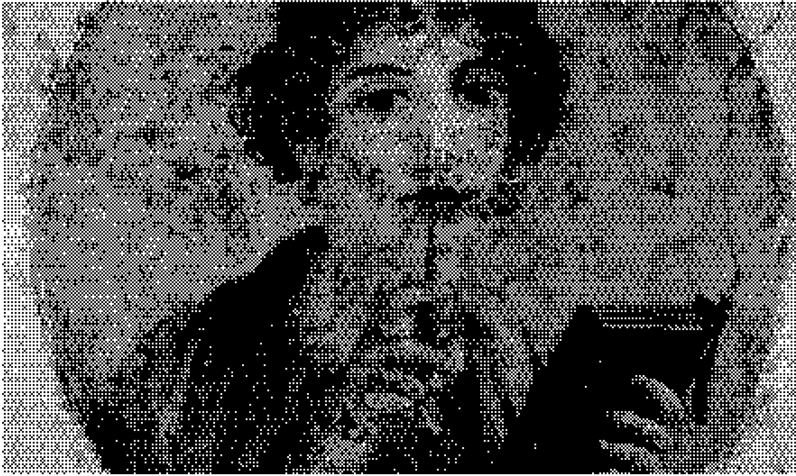
Long before our age of quantum communication and interstellar messaging, the wealthy citizens of the Roman Empire crafted a complex web of connections through the art of letter writing.
In 1st century BC Rome, affluent individuals would dictate letters to skilled scribes, who meticulously transcribed their words onto reusable wax tablets enclosed in elegant wooden frames. These tablets, capable of being quickly erased and reused, allowed for swift exchanges of information. Messengers darted through the bustling streets of Rome, often delivering responses within mere hours, facilitating rapid communication. Upon receiving a letter, a Roman might read it aloud to family members, friends, or business associates.
These letters were not just personal communications; they were semi-public documents. Secrecy was challenging to maintain, and thus, letters were often written with the understanding that they would be shared with a broader audience. The practice of copying and circulating documents was prevalent. Roman citizens frequently sent copies of their letters to multiple friends, ensuring that their messages reached a wider circle. Prominent figures such as Cicero and other politicians distributed copies of their speeches, allowing their words to echo throughout the empire even if the listeners were not present at the original delivery.
This early form of information dissemination enabled letters, speeches, and articles to quickly permeate Roman society, igniting discussions and debates among the elite. Roman authors, aware of their diverse audiences, tailored their writing styles accordingly. Formal tones were reserved for documents meant for wide circulation, while a more casual style was adopted for private correspondence. This adaptive approach ensured that their messages resonated effectively with their intended recipients.
The Roman Empire's "Acta Diurna": The Original Social Network
the Romans devised a remarkable system for disseminating information: the "Acta Diurna," or Daily Public Records.
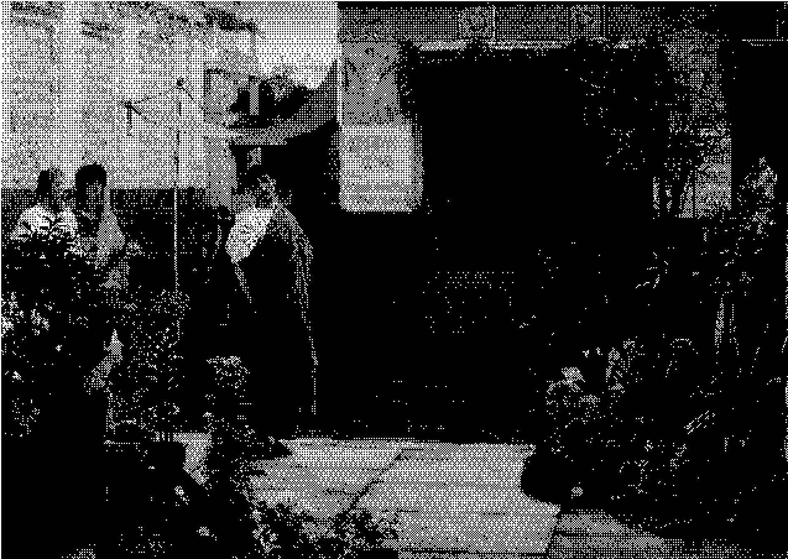
the Romans devised a remarkable system for disseminating information: the "Acta Diurna," or Daily Public Records. In ancient Rome, the Acta Diurna was the precursor to modern public announcements and social media updates. Official messages and matters of public interest were inscribed onto slabs of stone, known as albums (from the Latin albus, meaning "white"), which were prominently displayed in town squares and markets. These white boards, chalked or painted, bore decrees, edicts, and various notices in striking black inscriptions, ensuring that the populace remained informed.
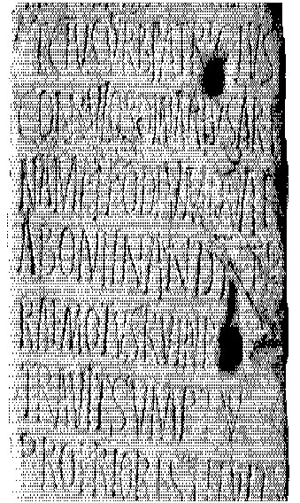
Initially focused on political affairs, the scope of the Daily Public Records quickly broadened to encompass a wide range of topics, including gifts, inheritances, funerals, and unusual events. Even seemingly trivial matters often carried significant political weight. For example, divorce, a common subject of the Acta Diurna, had major political implications due to the strategic nature of Roman marriages, which were often used to forge alliances and secure wealth for political careers.
As the philosopher Seneca quipped, "Without divorce, there would be no 'Daily Public Records.'"
Graffiti: Common People's Social Network in Ancient Rome
One notable inscription reads, "SCRIPSIT QUI VOLUIT" — "Whoever wanted to write, wrote."
In ancient Rome, oral dictation, letter exchanges, and the sharing of written news were activities reserved for the elite, often facilitated by skilled slaves. However, the common citizens engaged in a different, more accessible form of media: graffiti. The walls of Roman towns and cities were filled with messages ranging from advertisements and political slogans to personal announcements and artistic illustrations.
These messages were etched into plaster walls, painted, or written with charcoal, transforming public spaces into vast, communal bulletin boards. The traditional Roman house, with its inward-facing layout and doors opening onto inner courtyards, provided ample street-facing walls perfect for graffiti. This created a vibrant, open, and shared media environment accessible to everyone. In Pompeii alone, thousands of graffiti inscriptions have been discovered, revealing the voices of everyday Romans.
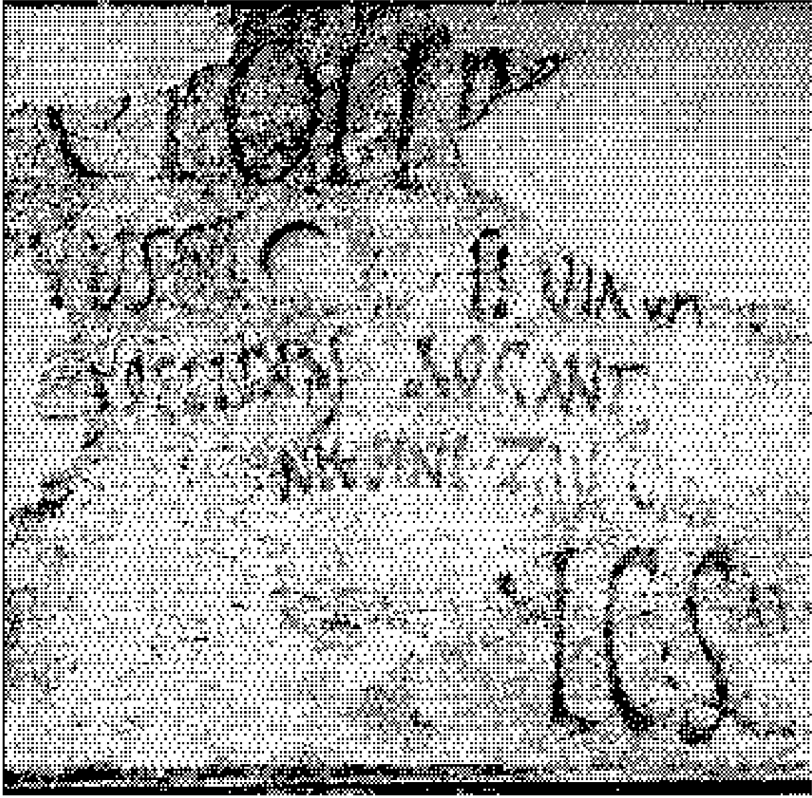
16th Century
Media Revolution:
Printing Press Pioneers
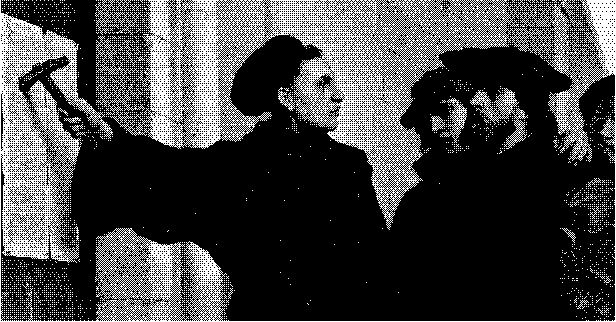
In the 16th century, Johannes Gutenberg's invention of the printing press marked a significant leap in the replication and dissemination of ideas. This innovation set the stage for Martin Luther, a German media pioneer, to harness the power of decentralized, person-to-person media.
Luther's approach revealed the immense potential of a media network where participants themselves were the disseminators. Just like the Romans with their graffiti, people collectively decided which information was worth sharing. However, the scale of reproduction was exponentially greater with the printing press. Luther simply provided his pamphlets to friendly printers, who spread them across Germany without requiring payment. These printed editions, sold for a few pfennigs (about the price of a chicken), were recommended by Luther's supporters and initially circulated in cities with printing presses.
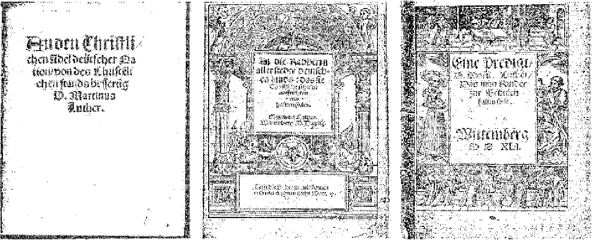
Owning a pamphlet and sharing its contents with friends was a mark of literacy and a statement of support for Luther's viewpoints. Even the illiterate or semi-literate purchased these pamphlets to align themselves with his ideas. If a pamphlet faced opposition from authorities, it could be easily hidden away, ensuring the persistence of its message.
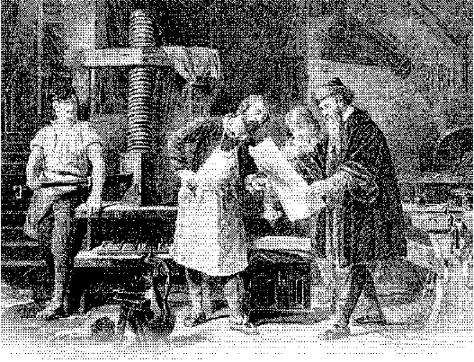
In 2000’s social media systems, the popularity of a message can be inferred from the number of likes, retweets, blog reposts, forum approvals, or clicks it receives. In Luther's time, the equivalent measure was the number of different editions of a pamphlet—essentially, the number of reprints. Between 1520 and 1526, 7,500 pamphlets were published in the German-speaking regions, about 2,000 of which were different editions of the dozens of pamphlets written by Luther. Luther's pamphlets were the most popular; it was said at the time that people "snatched" them rather than merely bought them. This demand peaked in 1523, a year in which nearly 400 editions of Luther's various pamphlets were published. Altogether, during the first decade of what we now call the Reformation, 6 million pamphlets were published, one-third of which were authored by Luther.
During the Reformation era, not only texts but also music and images circulated within social networks. Woodcuts were an effective form of propaganda as well. These large posters, printed with bold, heavy lines and interspersed with some text, conveyed messages to the illiterate or semi-literate, and preachers also used their visual impact during sermons. Luther once said,
"Without images, we cannot think or understand anything."
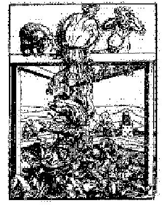
The best posters were drawn by Lucas Cranach, a friend of Luther. Some of his illustrations were astonishingly explicit: "The Origins of the Pope" depicted a hideous she-devil giving birth to the Pope and several cardinals, while "The Origin of the Monks" showed three devils defecating a pile of monks.
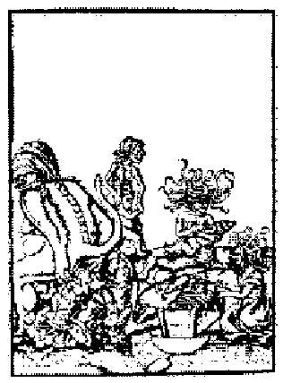
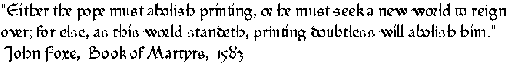
Luther's opponents likened the spread of his ideas to an infectious disease. The Pope, threatening to excommunicate Luther, issued a bull stating its purpose was to "halt the spread of this pernicious plague and prevent its further dissemination." Similarly, after Luther's excommunication, the Edict of Worms issued in 1521 warned that Luther's ideas must be prevented from spreading further, or else "all of Germany, and eventually all countries, would be infected by this malignant disease." Unfortunately, it was already too late—Luther's ideas had spread throughout Germany and beyond. In modern terms, Luther's message had gone viral.
17th Century
the Debate: Printing Freedom
in the 17th Century
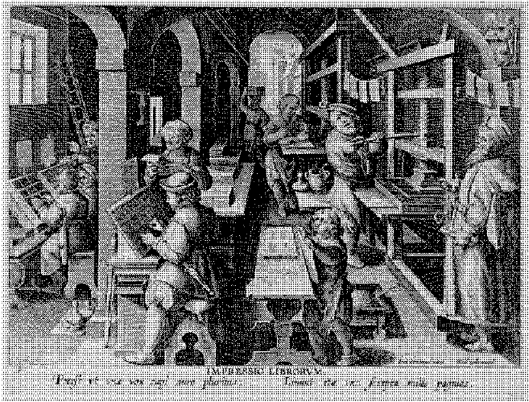
In the 1630s, England published an average of 624 works annually. By 1641, this number surged to over 2,000, and in 1642, it exceeded 4,000. From 1640 to 1660, about 40,000 publications were produced. Assuming an average print run of 1,000 copies per book, this meant 40 million copies annually for a population of around 5 million. This explosion in print far surpassed Luther's movement.
The freedom to publish increased both the quantity and variety of publications. New genres, voices, and applications for print emerged, building on the innovations of the previous 60 years, which began with pamphlets. News, history, and authors' opinions were presented together in various formats. Pamphleteers found effective ways to address anonymous audiences by anticipating and responding to potential objections within their pamphlets.
Notably, the pamphlets of the 1640s existed in an interconnected network, frequently referencing, quoting, or echoing each other, much like today's blogs. Often, a pamphlet's starting point was a response to, a supplement to, a critique of, or praise for another pamphlet. Another tactic involved printing excerpts and following them with a dialog discussing their merits and faults, often featuring real or fictional characters like "Peace" and "Truth."
One 1641 pamphlet depicted Thomas Bensted's head, executed for treason, conversing with another decapitated head about political matters. These "mock pamphlets" combined news and satire, proving particularly versatile. The explosion of new voices and formats often obscured the truth.
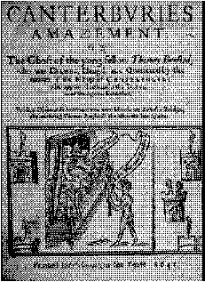
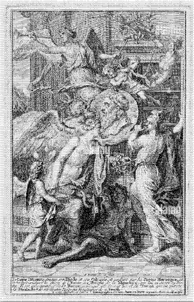
One observer noted in November 1641, "Many publications are false." Another author complained in 1642, "Every day we witness a plethora of exaggerated and sensational pamphlets that either alarm us with false alarms, or deceive us into thinking everything is safe; we are blinded by these cheap goods and cannot escape the truth's great enemy, bias, when judging things."
John Rushworth wrote a history of the English Civil War in 1659 to correct various inaccuracies in the news, stating, "People's imaginations are busier than their hands... Printing declarations never issued, narrating battles never fought and victories never won, spreading letters never written by the parties involved... Future generations relying on the pamphlets printed indiscriminately in our time cannot understand true history, which prompts me... to assert the truth while memories of the events are still fresh, to preserve truth and reject falsehood."
Not everyone saw the collapse of news regulation as negative. In fact, Parliament's 1643 attempt to restore licensing spurred John Milton's Areopagitica, a seminal defense of free speech. Milton argued that no one could fairly judge what should be published since all humans are fallible. He believed that exposing all works to public scrutiny and allowing readers to form their own judgments was far better, famously stating, "Let Truth and Falsehood grapple; who ever knew Truth put to the worse in a free and open encounter?" The struggle for publishing freedom in 17th-century England and Milton's philosophy inspired revolutionary thought in 18th-century France and America. Mirabeau translated Areopagitica, claiming its relevance for all times and nations. In America, Benjamin Franklin echoed Milton's influence in his Apology for Printers (1731), asserting that truth would always prevail when both sides could equally present their arguments.
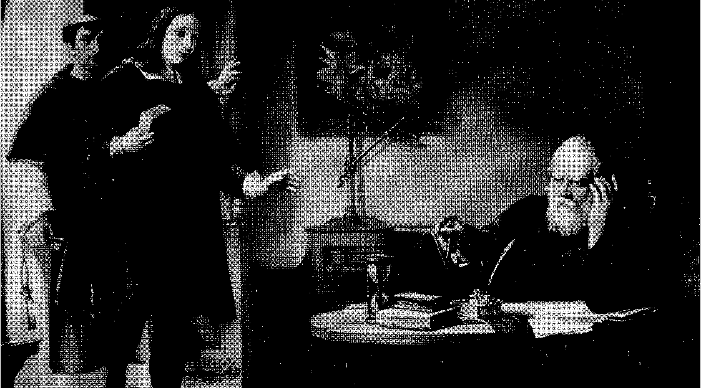
To modern eyes, the chaotic and confrontational media environment of the 1640s shares many similarities with 2000's blog culture on the internet. Both are interwoven networks of articles referencing and debating each other, with authors sometimes anonymous and content often unreliable but vividly opinionated. Today, with just a few clicks, we can publish or read a wide range of conflicting, unfiltered opinions online, something we take for granted as natural and essential. This freedom is rooted in the flourishing of social media thousands of years ago.
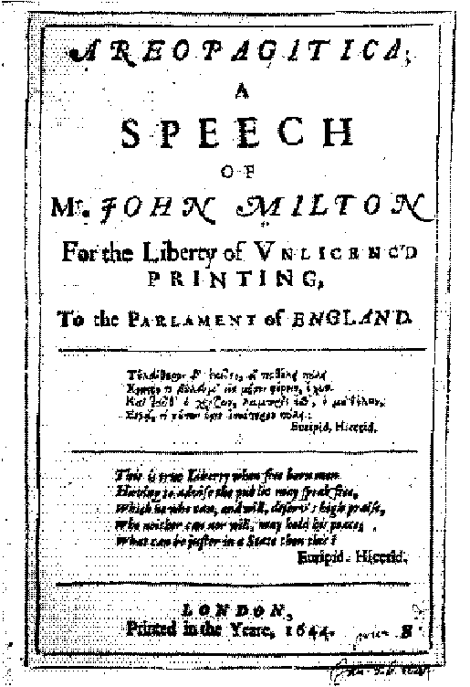
CDS3001 - Communication design studio 4
Digital Publishing - World Wild Web
Echoes of the Past: Unveiling Ancient Social Networks
Tianshu Yuan 30352886